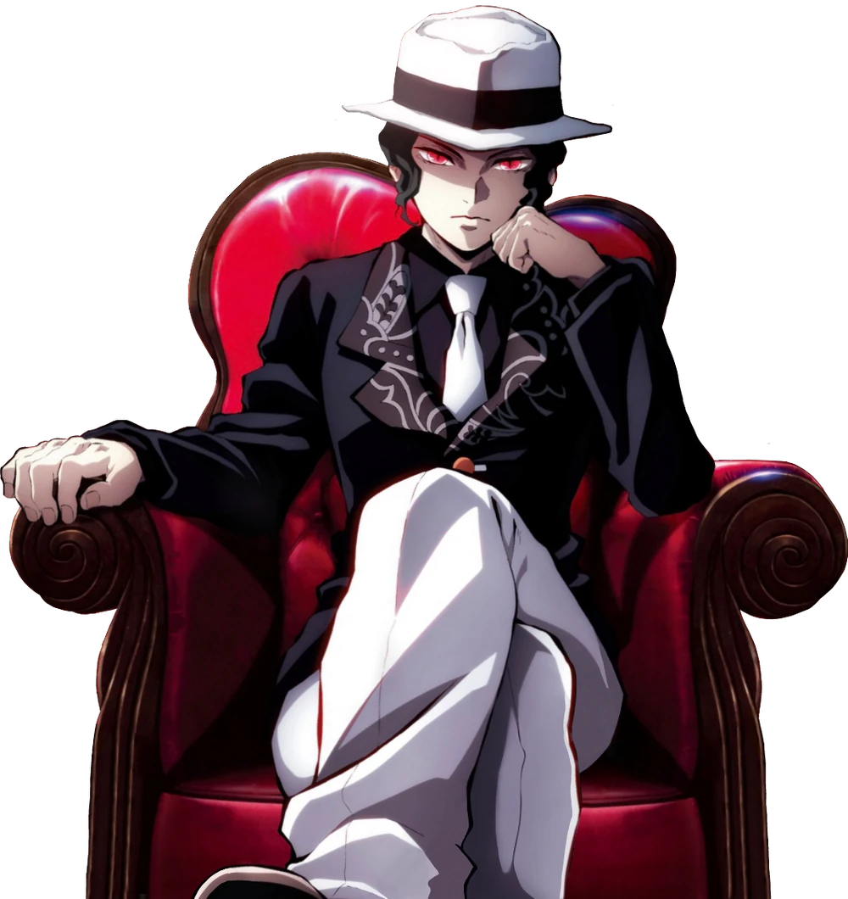

Muzan KibutsujiDurante el Periodo Heian, Muzan fue un humano que padecía una enfermedad terminal, que se convirtió sin querer en un Demonio como resultado de una medicina experimental utilizada en él y desde entonces se ha convertido en una obsesión personal, alcanzar la inmortalidad superando su único punto débil: la luz del Sol. Para completar dicho objetivo, Muzan busca encontrar la planta usada en él para su enfermedad llamada el Lirio de la Araña Azul o bien, crear Demonios con la esperanza de que uno de estos seres supere la debilidad hacia la Luz del Sol para así Muzan pudiera consumirlo. Muzan es insensible, despiadado y excepcionalmente inteligente. No ve ningún valor en ningún humano que haya encontrado y muestra poco valor en sus propios subordinados. Raramente molesto o feliz visualmente, parece completamente monótono y distante en la mayoría de las ocasiones, incluso cuando asesina cruelmente a sus propios subordinados. Las únicas veces que muestra emoción es cuando su visión de perfección avanza o cuando sus subordinados se someten por completo a su voluntad. El manga muestra que es más expresivo, particularmente cuando está enfurecido y sus rasgos faciales son exagerados para demostrarlo como tal (posiblemente como una forma de mostrar sus emociones normalmente ilegibles). En el anime, sus expresiones cambian ligeramente y su tono de voz tiende a ser consistente en casi todo momento, acentuando su comportamiento desprendido. El rasgo más destacado que posee Muzan es el narcisismo extremo, su megalomanía y una obsesión por convertirse en el ser perfecto poseedor de la inmortalidad. Este último comportamiento está derivado de su propia Tanatofobia al haber experimentado la cercanía con la muerte literalmente desde su propio nacimiento. En resumen, por su obsesion por la inmortalidad y la perfeccion, ha esparcido el terror en el mundo creando un ejercito de demonios destruyendo innumerables vidas en su busqueda por consolidar su supremacia. |  |
| ____________________________ |